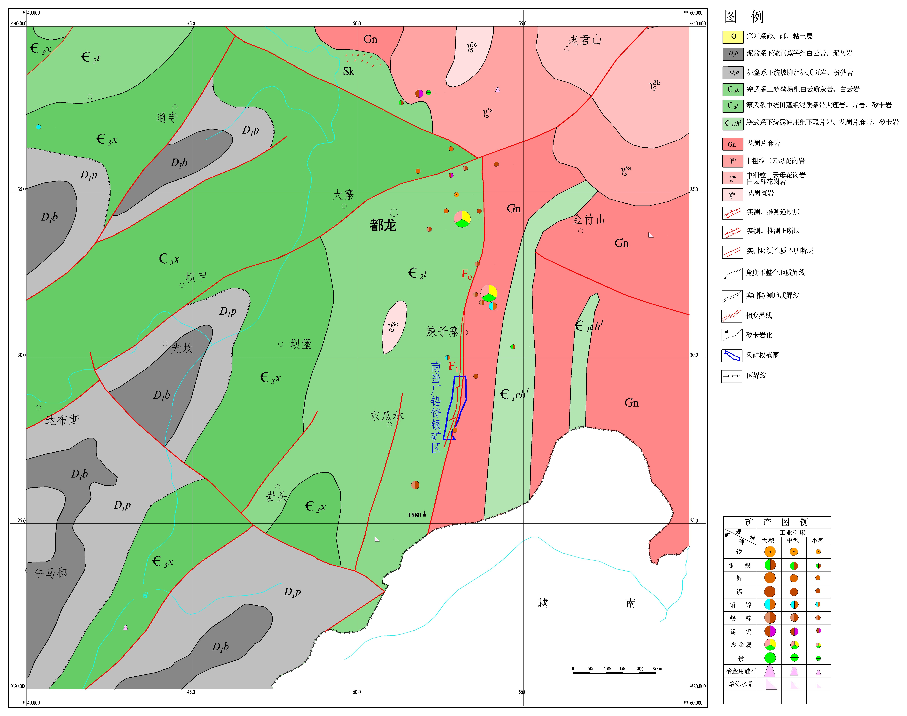

区域地质概况
地层
矿区位于华南褶皱系西缘，区域地层主要为古生界和中生界地层，包括：
- 寒武系：主要为碳酸盐岩和碎屑岩
- 奥陶系：以碳酸盐岩为主
- 泥盆系：主要为碳酸盐岩沉积
- 石炭系：碳酸盐岩和碎屑岩互层
- 二叠系：玄武岩和碳酸盐岩

Regional Geology & Metallogenic Conditions
矿区位于华南褶皱系西缘，区域地层主要为古生界和中生界地层，包括：

区域构造以褶皱和断裂为主，主要构造特征包括：
矿区位于滇东南铅锌多金属成矿带，该区域是我国重要的铅锌银多金属矿产地之一。 区域成矿与燕山期岩浆活动密切相关，热液成矿作用明显。
成矿作用主要发生在燕山期，与区域内中酸性岩浆侵入活动同期。 热液沿断裂及层间破碎带运移，在有利的构造部位富集成矿。
矿床类型为热液脉型铅锌银矿床，矿体主要赋存于断裂破碎带及层间破碎带中， 受构造控制明显。
主要成矿元素为Pb、Zn，伴生Ag等有益元素。矿石矿物以方铅矿、闪锌矿为主， 伴生银矿物。
矿区周边分布有多处铅锌银矿床（点），区域成矿条件优越：